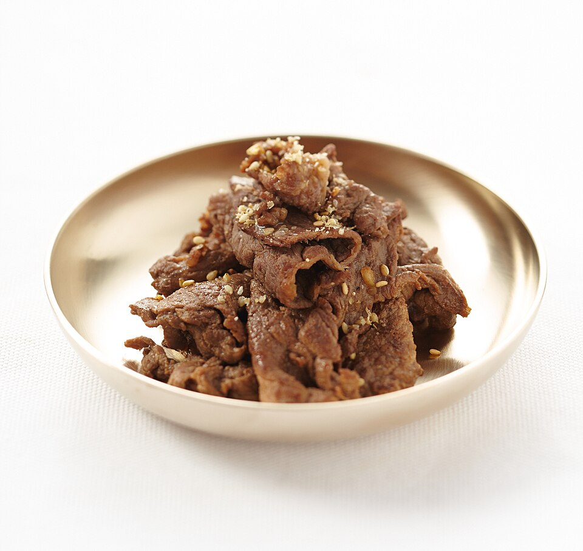

Home

Bulgogi: An addictive introduction to Korean Cuisine
If you are new to Asian food, this has to be one of your first recipes to try.
It is simple, yet very flavorful, quick to make, and pairs perfectly with some white rice.
As with any recipe, you can complicate it or simplify it as much as you want!
Ingredients:
- Best ribeye you have
- Soy sauce
- Brown sugar
- Minced garlic (2-3 cloves)
- ginger powder or minced
- Some oil for cooking
- Minced onion (optional)
- Toasted Sesame oil (optional)
- Toasted Sesame seeds (optional)
Steps:
- Cut the steak into thin slices (easier if the steak is frozen)
- In a Ziploc bag add the steak, the brown sugar, soy sauce, sesame oil, ginger, and garlic.
- Let marinate for at least 2 hours.
- Heat up the oil in pan using medium-high heat.
- Start cooking the onions first, if you are using them.
- Start cooking the meat, making sure it sears well on both sides.
- Once almost done, add the sesame seeds if you want them.
- Recommend to serve on a plate with some hot white rice.